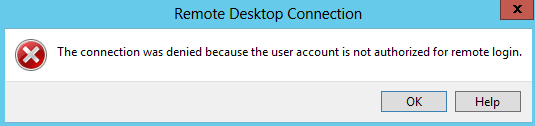
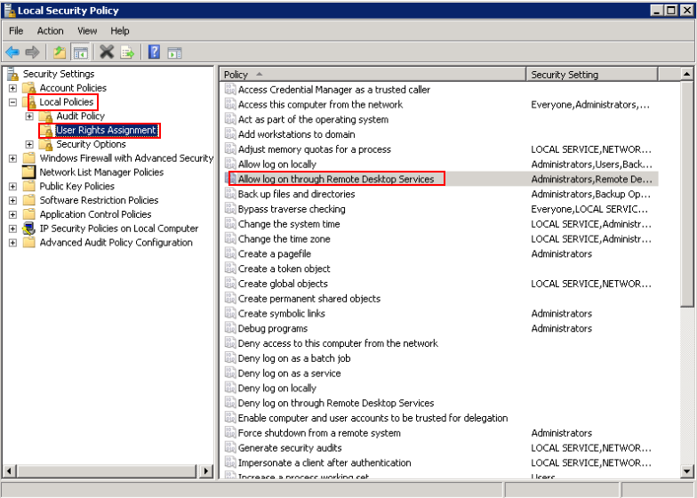
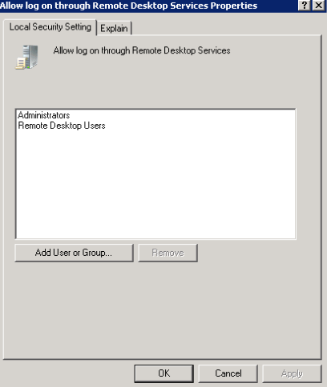
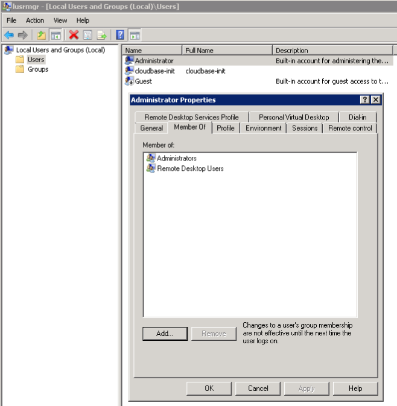
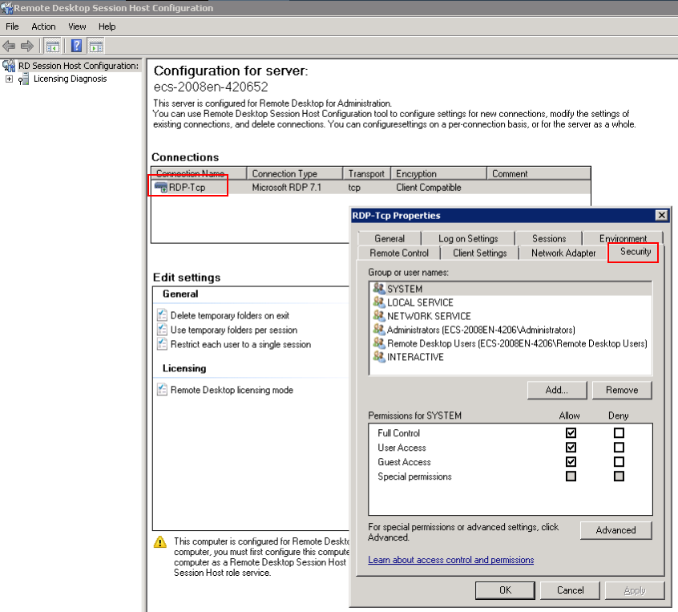

Symptom
An error message is displayed indicating that the connection is denied because the user account is not authorized for remote login.
Figure 1 Error message

Possible Causes
The remote desktop connection permissions have been incorrectly configured.
Solution
- Check remote desktop permissions on the ECS.
- In the Run dialog box, enter secpol.msc and click OK to open Local Security Policy.
- Choose Local Policies > User Rights Assignment > Allow log on through Remote Desktop Services.
Figure 2 Local security policy

- Check whether there are user groups or users that have been granted the remote login permission.
If not, add required users or groups.
Figure 3 Allow log on through Remote Desktop Services properties

- Check the target user group.
- Open the Run dialog box, enter lusrmgr.msc, and click OK to open Local Users and Groups.
- Double-click Users on the left.
- Double-click the name of the user to whom the login error message was displayed.
- In the displayed dialog box, click the Member Of tab. Ensure that the user belongs to the user group that is assigned with the remote login permission in 2.b.
Figure 4 Checking the target user group

- Check the remote desktop session host configuration.
- In the Run dialog box, enter tsconfig.msc and click OK to open Remote Desktop Session Host Configuration.
- Double-click RDP-Tcp or other connections added by a user under Connections and click the Security tab.
Figure 5 Security

- Check whether there are user groups or users that have been granted the remote login permission under Group or user names.
If not, add required users or groups.
- Restart the ECS or run the following commands in the CLI to restart the Remote Desktop Services:
net stop TermService
net start TermService